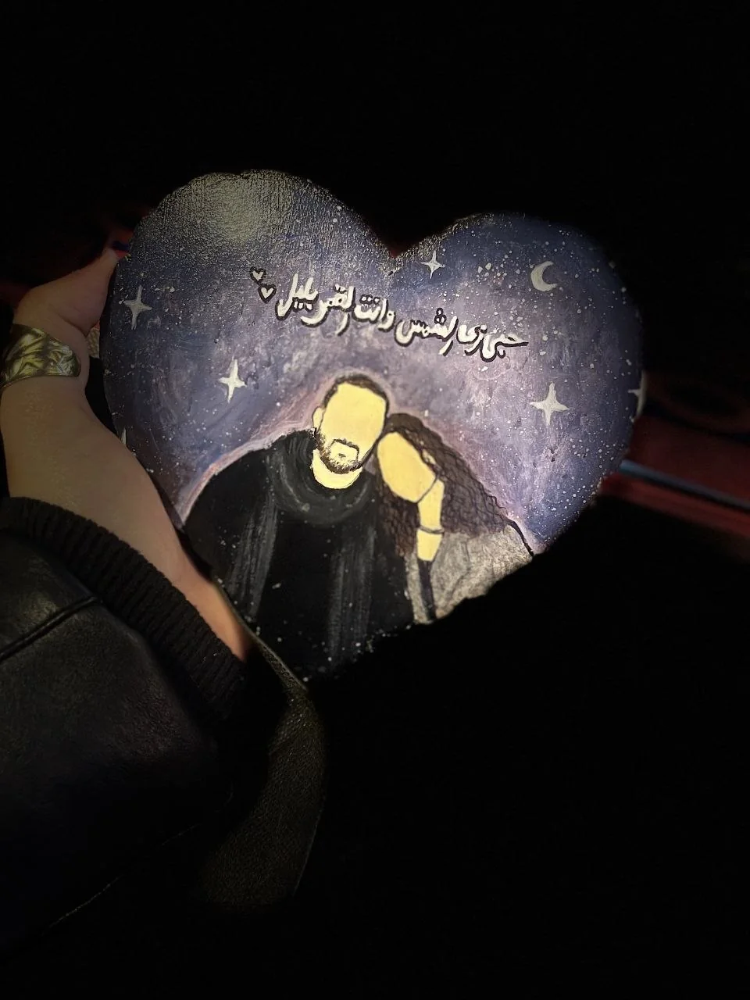

A STORY MADE OF LITTLE THINGS
في حكايات
بتفضل جوانا.
ودي حكايتنا إحنا… بكل ضحكة، وكل تفصيلة صغيرة، وكل لحظة نفسي تفضل عايشة.
خدي وقتك… مفيش حاجة هنا مستعجلة.
our little universe
you & me · always
✦
✧
♡
KEROLA JOURNAL01 — 28 · OUR MEMORIES
♡
A SMALL SECRET
قبل ما نبدأ…
في باب صغير للحكاية دي، ومفتاحه حاجة بينا.
PICK A SOUNDTRACK
اختاري أغنية
تليق بالحكاية.
اختاري واحدة تسمعيها وإنتِ بتتفرجي على الذكريات. هتفتحلك مصدر الاستماع، لأن ملفات الأغاني نفسها مش موجودة مع الصور والفيديوهات.
THE KEROLA JOURNAL
مش مجرد صور.
دي لحظات عشناها.
كل ذكرى ليها حكايتها. افتحيها واحدة واحدة، وخلّي التفاصيل الصغيرة تاخد وقتها.
MADEWITHLOVE♡
24 ذكرىاسحبي براحتك أو افتحي أي لحظة
THE SUN & THE MOON
☾
حبي زي الشمس
وانتي القمر بليل.
مش لازم كل حاجة تبقى كاملة… كفاية إن اللحظات دي كانت حقيقية، وإنها لسه غالية عندي.
من قلبي ليكي ♥

وآخر الحكاية… الهدية اللي شايلة جملة مش عايز أنساها.
☾
THE HIDDEN MOON
دي ليكي إنتِ بس.
فاكرة إن في باب تاني؟ مفتاحه مختلف.
JUST FOR YOU
يا أجمل قمر.
THE HIDDEN ROOM
غرفة التغفيلات
المكان جاهز… ومحتوى التغفيلات هنضيفه لما تبعتهولي.
☻ ♡ ☻